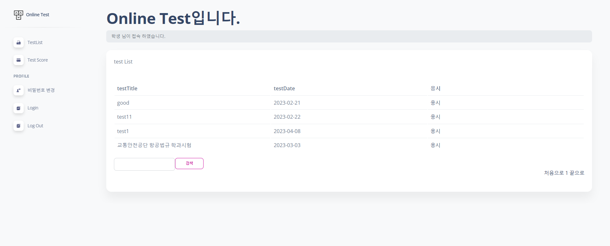
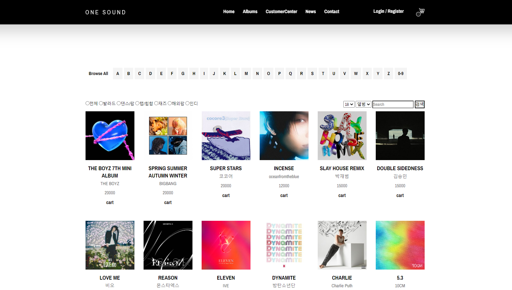
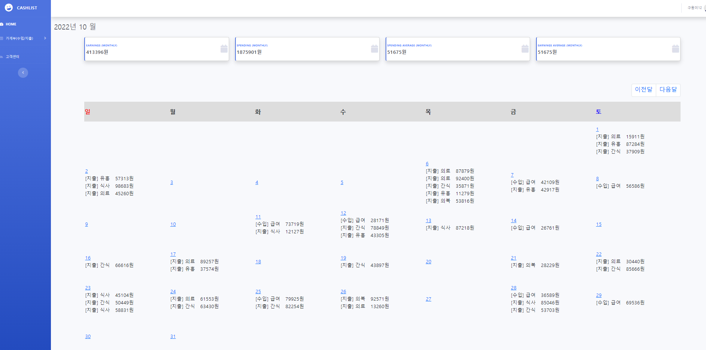
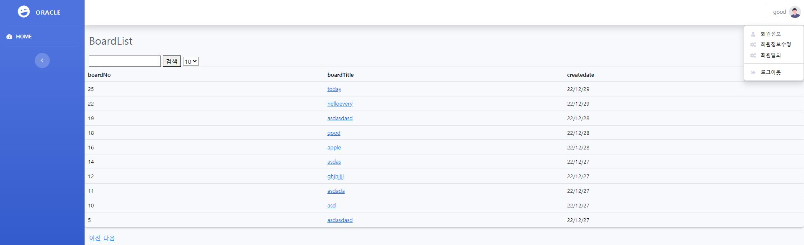

Who Am I?
어렵게 얻은 기회, 놓치지 않고 최선을 다하여, 유능한 개발자로 평생을 살아가겠습니다.
Email : yd892@naver.com
깃허브url :https://github.com/ldk77
생년월일 : 1993.02.18
최종학력 : 안동대학교 응용신소재공학과 수료 3.5/4.5
경력사항 : (자동화설비업체)신도기연 생산기술팀 대리 2017.09 ~ 2021.09
개발자과정 : 구디아카데미 2022.10.18 ~ 2023.03.30
1개월차 : 간단한 홈페이지를 만들면서 Java 기본문법과 기본API을 배워습니다.
2개월차 : CRUD를 구현하기 위한 간단한 쿼리문,DB연결 등을 배웠으며 그것을 통한 프로젝트를진행하였습니다
프로젝트(블로그 형식의 가계부: MODEL1)
3개월차 : JavaScript, jQuery를 배웠으며 중간에 짧게 OracleDB를 배워 OracleDB를 이용한 간단한 프로젝트를 진행하였습니다.
4개월차 : 팀:세미프로젝트(쇼핑몰 프로젝트: MODEL2방식)을 진행하였습니다
5개월차 : 스프링(프레임워크,여러 api)을 배우면서 미니프로젝트(온라인 시험)를 진행하였습니다.
6개월차 : 교육받은 스프링을 통한 파이널프로젝트(플랫폼사이트)를 진행하였습니다.
정보처리기사 필기 현재합격하였으며, 실기도 바로 시험신청하여 취득할예정입니다.
자격증
운전면허 1종보통
2011.07
컴퓨터활용능력 2급
2016.09
보유 기술

JAVA
Model1 방식의 jsp으로만으로 게시판을 만든 것을 시작으로, Model2 mvc방식으로 기본 자바 servlet으로 개인프로젝트, 팀프로젝트를 만들고 마지막으로 Spring 프레임 워크를 팀프로젝트로 만들면서 web개발에 있어 자바의 역할과 동적 웹페이지 서비스의 구조를 학습하고 있습니다.
DataBase
Maria DB를 중심으로 학습하였고,
oracle DB도 수업을들어 간단한 게시판도 만든적있습니다.

Java Script
jQuery를 이용하여 AJAX로 외부 URL이나 rest컨트롤러에 JSON타입의 데이터를 요청하여 갱신없이 데이터를 요청 할 수 있습니다.
HTML&CSS
프로젝트 진행시에 bootstrap과 템플릿을 이용하지만 정해진 것보다 더 원하는 모습을 구현하고자 기본적인 css을 학습하고 있습니다.
|
상태 : 프로젝트 진행중 이미지를 누르시면 배포 중인 해당 사이트를 확인하실 수있습니다. |
|
| 깃허브 주소 | https://github.com/ldk77 |
| 프로젝트 일정 | 2023.02.15~ |
| 프로젝트 설명 | spring boot 프레임 워크를 사용하여 만드는 팀 프로젝트로, 현재 DB설계 및 요구사항 완료 플랫폼사이트로 플랫폼안에 여러업체의쇼핑몰,여러업체의 예약사이트 Ajax,WebSocket등 기존에사용하지않은 여러 Api및 라이브러리등을 활용했습니다 |
| 개발환경 | Language : Java(jdk-11.0.14),HeidiSQL(11.3.0) 사용 프로그램 : eclipse(sts-4.14.1.) Database : Mariadb(10.5) Library : Servlet(4.0), BootStrap5, JSTL(1.2), jQurey(3.6.1) WAS : Apache Tomcat9 server : tomcat9 |
|
상태 : 진행중(차트 및 추가기능적용후 배포예정) 이미지를 누르시면 배포 중인 해당 사이트를 확인하실 수있습니다.  |
|
| 깃허브 주소 | https://github.com/ldk77/online-test.git |
| 프로젝트 일정 | 2023.02.1~ |
| 프로젝트 설명 |
SpringFramework , SpringBoot를 사용하여 LMS 일부 축약된 시스템을 만들었습니다
Spring를 활용하여 강사들의 문제출제 학생들의 문제풀이 및 성적관리를 구현했습니다 파이널프로젝트 전 간단하게 만들어봤습니다. |
| 개발환경 | Language : JAVA, SQL, JavaScript, Ajax 사용 프로그램 : eclipse(2021-06 (4.20.0)) Database : Mariadb(10.5) 사용도구 : JSTL, Bootstrap, MyBatis, Lombok, JQuery, JDBC, SpringBoot, Maven server : tomcat9 |
|
상태 : 완성 이미지를 누르시면 배포 중인 해당 사이트를 확인하실 수있습니다.  |
|
| 깃허브 주소 | https://github.com/TaeheeMin/shop.git |
| 프로젝트 일정 | 2023.1.4~ 1.30 |
| 프로젝트 설명 | Model2 MVC 방식으로 만든 세미 팀 프로젝트입니다. 검색에 따른 상품목록 , 주문시 포인트사용 장바구니 추가,구매시 리뷰기능 등이있습니다. 저는 프로젝트에서 주문,리뷰,포인트 기능을 구현하였습니다 |
| 개발환경 | Language : Java(jdk-11.0.14),HeidiSQL(11.3.0) 사용 프로그램 : eclipse(2021-06 (4.20.0)) Database : Mariadb(10.5) server : tomcat9 |
|
상태 : 완성 이미지를 누르시면 배포 중인 해당 사이트를 확인하실 수있습니다.  |
|
| 깃허브 주소 | https://github.com/ldk77/cashbook.git |
| 프로젝트 일정 | 2022.11.21~ 12.14 |
| 프로젝트 설명 | Model1 MVC 방식으로 만든 개인 프로젝트입니다. Java의 Calendar API를 이용하여 달력을 만들어 가계부를 구성하였으며, 세션을 통해 로그인 기능을 구현하고, 통계는 집계함수를 활용하여 지출및 수입을 구현하였습니다. |
| 개발환경 | Language : Java(jdk-11.0.14),HeidiSQL(11.3.0) 사용 프로그램 : eclipse(2021-06 (4.20.0)) Database : Mariadb(10.5) server : tomcat9 |
|
상태 : 완성 파일로 배포는 하지않은 상태이며 코드는 사진을 누르시면 깃허브에 연결됩니다  |
|
| 깃허브 주소 | https://github.com/ldk77/oracle-jdbc.git |
| 프로젝트 일정 | 2022.12.28~ 12.29 |
| 프로젝트 설명 | Maria DB를 주로 사용하였는데 수업시간에 Oracle DB를 배울기회가 생겨 간단한 게시판형태이며 기본적인CRUD를 구현해봤습니다 |
| 개발환경 | Language : Java(jdk-11.0.14) 사용 프로그램 : eclipse(2021-06 (4.20.0)) Database : OracleDB server : tomcat9 |